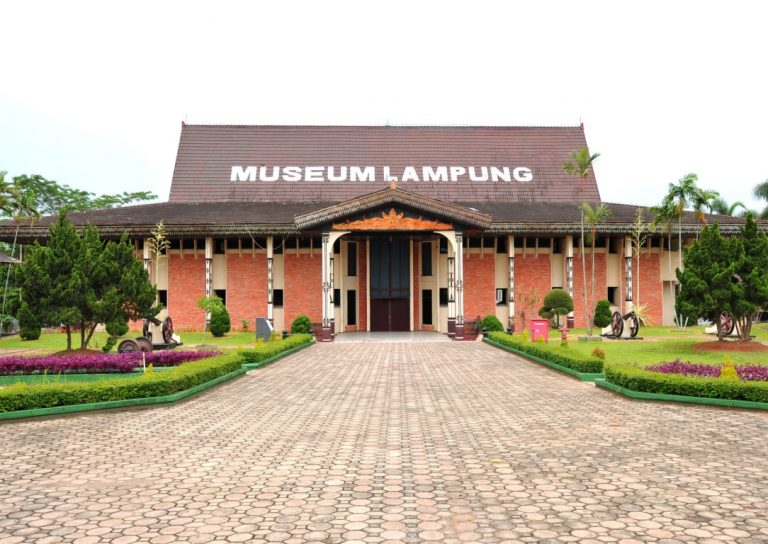
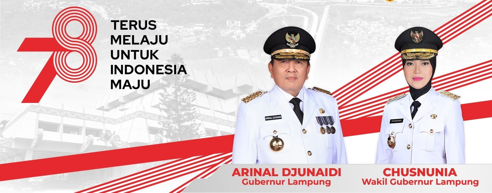
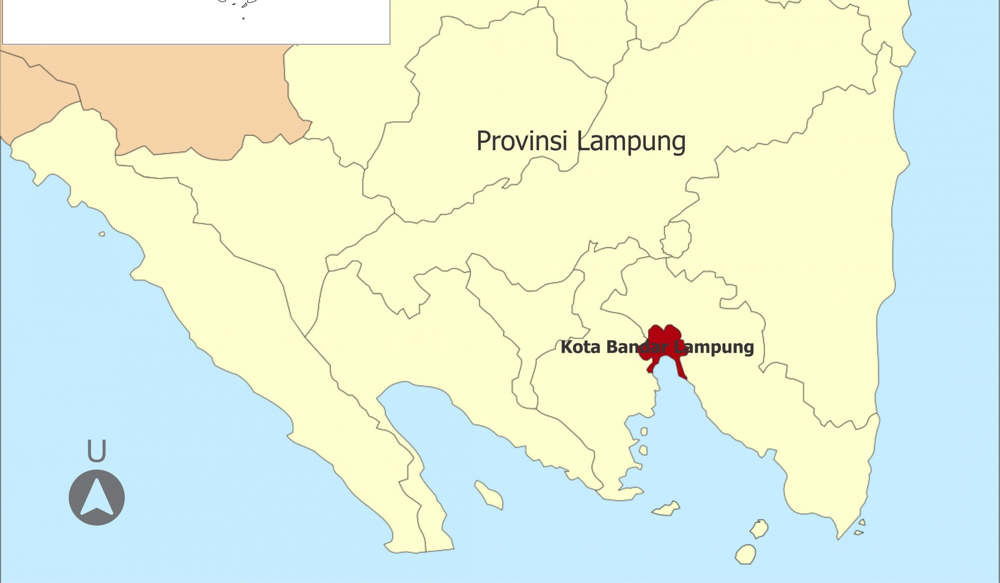
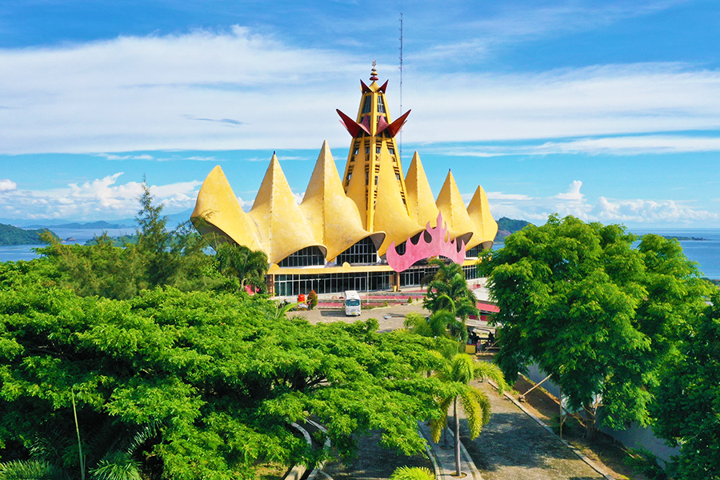
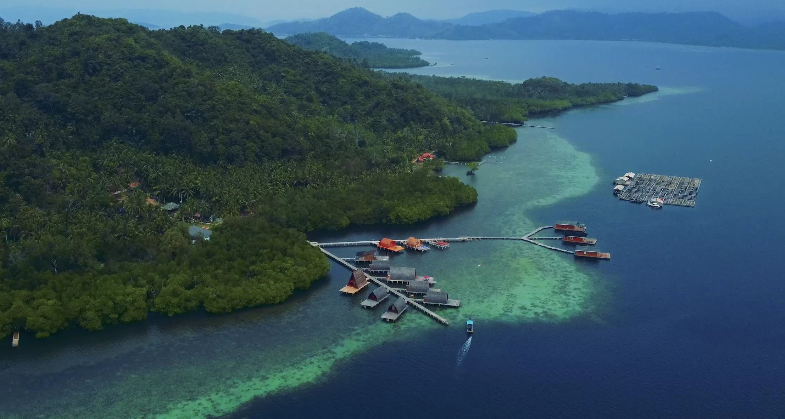
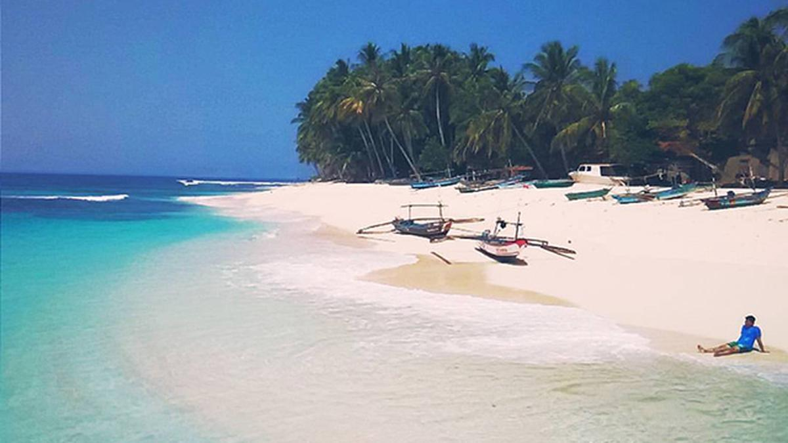

Sejarah

Pada abad ke- 7 tahun 671 Masehi zaman pra-sejarah Lampung di
Sumatra, Sriwijaya menguasai sebagian besar Asia Tenggara hingga
abad ke-11 Masehi, di adad ke-13 tahun 1289 Masehi penyebaran Islam
awal bermula dari Batu Brak di tengkuk gunung pesagi daerah hanibung
yang ditandai dengan adanya peninggalan pra-sejarah hingga zaman
sejarah yakni Dolmen dan Megalitikum tertua di tanah Lampung, lokasi
ini secara administratif berada di wilayah Kabupaten Lampung Barat
yang beribu kota di Liwa. Pada abad ke-16 Masehi Penyebaran Islam
juga masuk dari Banten ke Tolang Pohwang, secara administratif
berada di daerah Kabupaten Tulang Bawang Provinsi Lampung. Provinsi
Lampung lahir pada tanggal 18 Maret 1964 dengan ditetapkannya
Peraturan Pemerintah Nomor 3/1964 yang kemudian menjadi
Undang-undang Nomor 14 tahun 1964. Sebelum itu Provinsi Lampung
merupakan keresidenan yang tergabung dengan Provinsi Sumatra
Selatan.
Pimpinan Provinsi

Gubernur Provinsi Lampung
Ir. H. Arinal Djunaidi
Tempat, Tanggal Lahir : Tanjung Karang, 17 Juni 1956
Agama : Islam
Riwayat pendidikan :
- 1981: Sarjana Pertanian Universitas Lampung
- 1993: Sekolah Pimpinan Administrasi Tingkat Lanjutan
-
1996: Diklat Staf dan pimpinan Administrasi Tingkat Pertama
-
2002: Diklat Staf dan Pimpinan Administrasi Tingkat Menengah
Riwayat Jabatan :
-
Asisten Pemerintahan Sekretariat Daerah Provinsi Lampung
(2012–2013)
-
Asisten Pembangunan Sekretariat Daerah Provinsi Lampung
(2013–2014)
- Sekretaris Daerah Provinsi Lampung (2014–2016)
- Gubernur Lampung (2019–Sekarang)
Wakil Gubernur Provinsi Lampung
Hj. Chusnunia Chalim, S.H., M.Si., M.Kn., Ph.D.
Tempat, Tanggal Lahir :Lampung Timur, 12 Juli 1982
Agama : Islam
Riwayat pendidikan :
- S-1 Hukum, Universitas Saburai.
- S-2 Ilmu Politik, Universitas Nasional.
- S-2 Kenotariatan,Universitas INdonesia. (2011)
- S-3 Sastra dan Sains Sosial, Universitas Malaya.
Riwayat Organisasi :
- Ketua DPW PKB Lampung (2021-2026)
-
Barisan Penggerak (Barak) Bangsa, Sebagai: Sekjend (2014 –
2019)
-
Konfederasi Sarbumusi, Sebagai: Bendahara Umum (2013 – 2018)
- DPP PKB, Sebagai: Sekretaris Umum (2010 – 2014)
Geografis

Provinsi Lampung memiliki wilayah seluas 35.288,35
km2.Wilayahnya terletak di antara 105°45'-103°48' BT dan
3°45'-6°45' LS. Daerah ini berada di sebelah barat berbatasan dengan
Samudra Hindia, di sebelah timur dengan Laut Jawa, di sebelah utara
berbatasan dengan provinsi Sumatra Selatan dan Bengkulu, dan di
sebelah selatan berbatasan dengan Selat Sunda. Beberapa pulau
termasuk dalam wilayah Provinsi Lampung, yang sebagian besar
terletak di Teluk Lampung, di antaranya: Pulau Darot, Pulau Legundi,
Pulau Tegal, Pulau Sebuku, Pulau Kelagian, Pulau Sebesi, Pulau
Pahawang, Pulau Krakatau, Pulau Putus dan Pulau Tabuan. Ada juga
Pulau Tampang dan Pulau Pisang di yang masuk ke wilayah Kabupaten
Pesisir Barat.
Keadaan alam Lampung, di sebelah barat dan selatan, di sepanjang
pantai merupakan daerah yang berbukit-bukit sebagai sambungan dari
jalur Bukit Barisan di Pulau Sumatra. Di tengah-tengah merupakan
dataran rendah. Sedangkan ke dekat pantai di sebelah timur, di
sepanjang tepi Laut Jawa terus ke utara, merupakan perairan yang
luas.
Pariwisata di Lampung
Provinsi Lampung adalah provinsi paling selatan di pulau Sumatera,
dengan luas 169,21 km² yang terbagi ke dalam 20 Kecamatan dan 126
Kelurahan. Lampung menjadi Provinsi terpadat kedua di pulau Sumatera
setelah Medan. Karena lokasinya yang tidak terlalu jauh dari ibu
kota Jakarta, Lampung kini bukan lagi hanya kota tujuan transmigrasi
tapi kini lampung menjadi salah satu destinasi wisata populer.
Berlokasi di pesisir selatan pulau Sumatera, Lampung memiliki banyak
pantai-pantai yang indah. Mari kita melihat apa saja tujuan wisata
populer yang ada di Provinsi Lampung
Menara Siger

Tak jauh dari Pelabuhan Bakauheni, berdiri megah sebuah bangunan
yang menjadi kebanggaan masyarakat Lampung. Bangunan ini berdiri
menjulang pada ketinggian 110 meter di atas permukaan laut dan
terletak tepat menghadap gerbang masuk Pelabuhan Bakauheni. Inilah
landmark Provinsi Lampung sekaligus titik kilometer nol selatan
Sumatera, yang dengan penuh kebanggaan diberi nama Menara Siger.
Menara Siger diresmikan oleh Gubernur Sjahroedin Z.P. pada 30
April 2008. Menara Siger yang terletak di Bukit Gamping,
Bakauheni, Lampung Selatan, ini memiliki bentuk yang unik dengan
sembilan kerucut berwarna kuning keemasan yang berderet memanjang.
Bentuk ini mengadaptasi bentuk mahkota pengantin wanita (siger)
dalam adat Lampung. Sedangkan, pucuknya yang berjumlah sembilan
adalah simbolisasi sembilan bahasa yang ada dalam masyarakat
Lampung. Kerucut pada bagian tengah berukuran lebih besar dan
lebih tinggi yang menjadi puncak dari menara ini.
Arsitektur unik menara ini dibuat oleh Ir. H. Anshori Djausal
M.T., arsitek asli Lampung. Konstruksi bangunan dibuat dengan
tehnik khusus yang membuatnya tahan guncangan dan terpaan angin.
Tehnik yang disebut ferrocement ini adalah sistem konstruksi
dengan rangka mirip jejaring laba-laba yang kokoh. Ornamen
interior dan eksterior bangunan banyak mengadaptasi bentuk-bentuk
dalam motif kain tapis yang juga menjadi ciri khas masyarakat
Lampung.
Pulau Pahawang

Yang ditawarkan Pulau Pahawang adalah keindahan pantai dan bawah
lautnya. Pulau ini memiliki banyak pantai bepasir putih di bagian
utara, timur, dan selatan.Sebagian lagi berupa pantai dengan
hamparan hutan mangrove yang lebat.Dengan keliling lebih dari 12
kilometer, pulau ini memiliki luas lebih dar 700an hektar. Dan
dihuni oleh lebih dari 300 kepala keluarga. Yang kebanyakan
tinggal di dusun-dusun di dekat dengan pantai.Terdapat Pulau
Pahawang Kecil di arah barat Pulau Pahawang Besar.
Pulau ini termasuk luas dan memiliki banyak spot snorkeling dan
diving. Anda bisa berpindah spot tanpa harus pergi ke pulau lain
di sekitar. Karena di satu spot bisa saja membutuhkan waktu 1-2
jam menikmati keindahan bawah lautnya.Jaraknya tidak terlalu jauh
dari Kota Bandar Lampung. Bisa saja Anda memilih untuk berwisata 1
hari. Pergi pagi dan pulang sore atau malam.Namun jika ingin lebih
santai dan puas, wisata 2 hari 1 malam di Pulau Pahawang bisa
menjadi pilihan menarik dan mengasyikkan.
Taman Nasional Way Kambas
Taman Nasional Way Kambas terkenal sebagai tempat konservasi gajah
sumatera yang merupakan hewan asli Pulau Sumatera. Kawasan ini
terdiri dari hutan air rawa dengan hamparan padang rumput, semak
belukar, serta hutan pantai. Luas secara keseluruhan mencapai
125.000 hektar. Jumlah gajah yang dilatih di Way Kambas mencapai
300 gajah. Gajah-gajah tersebut nantinya akan disebarkan ke
sejumlah kebun binatang yang ada di Indonesia. Way Kambas bukan
hanya rumah bagi gajah sumatera, tetapi juga binatang yang
dilindungi lain seperti beruang madu, badak sumatera, harimau
ssumatera, rusa sambas, kijang, kucing emas, tapi juga beberapa
hewan lain yang terancam punah. Bagi Anda yang ingin mengunjungi
Way Kambas, Anda dapat melihat dari dekat tentang proses
penangkaran satwa. Di sore hari, Anda dapat menikmati atraksi
menarik yang disuguhkan oleh gajah-gajah disana, seperti atraksi
mengusung kayu, atraksi membajak sawah, serta sirkus. Di akhir
pekan, atraksi yang bisa Anda nikmati misalnya adalah pertandingan
bola antar gajah.
Pulau Pisang

Pulau Pisang adalah salah satu pulau paling barat di Provinsi
Lampung dan langsung menghadap Samudra Hindia. Pulau ini merupakan
kecamatan tersendiri yang masuk ke dalam wilayah Kabupaten Pesisir
Barat, Provinsi Lampung. Pulau seluas sekitar 2.310 hektar ini
menyuguhkan keindahan pantai yang sangat menakjubkan. Dengan pasir
pantai yang putih halus dan bersih, Pantai Pulau Pisang akan
membuat anda betah dan nyaman berlama-lama menikmati pemandangan
laut yang luas diiringi hembusan angin sepoi-sepoi khas pantai.
Selain keindahan pantainya yang mempesona, Pulau ini juga memiliki
beberapa spot wisata lain yang sayang untuk dilewatkan. Spot yang
paling sering dikunjungi adalah Pantai Dermaga. Pantai ini
terletak di Pekon Pasar.